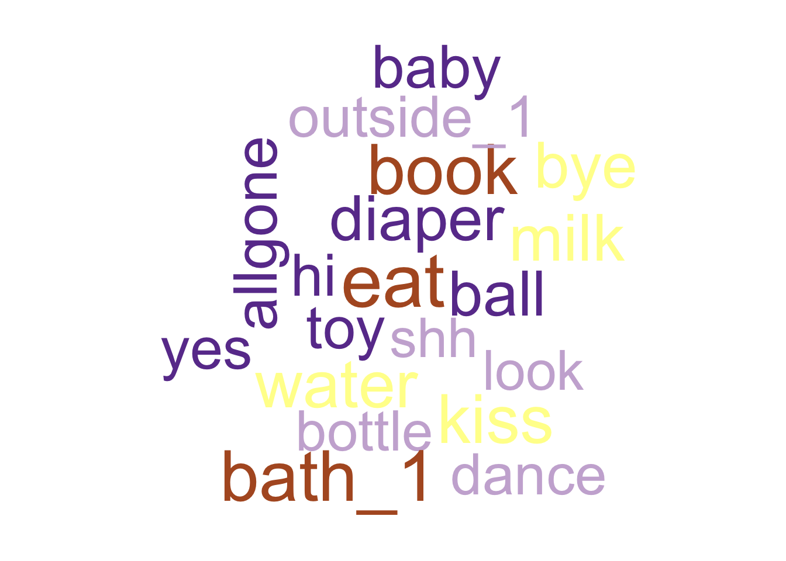
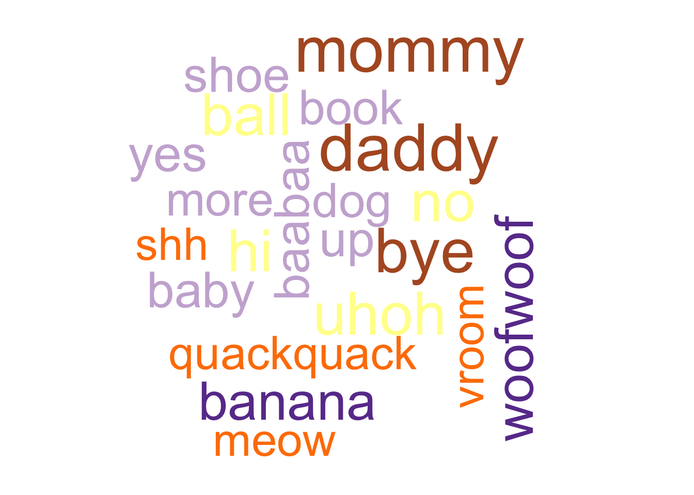

Language visualizations
Language exposure
df <- home_visit_df |>
dplyr::mutate(language_child = stringr::str_replace_all(language_child, " ", "_"))
xtabs(formula = ~ child_sex + language_child, data = df)## language_child
## child_sex english english_spanish
## female 172 32
## male 153 51MB-CDI
12-mo-old English speakers
eng_12 <-
readr::read_csv(
"../data/csv/home_visit/agg/mcdi_english_12_combined.csv",
col_types = readr::cols(.default = 'c'),
show_col_types = FALSE
)There are \(n=\) 125 participant records.
eng_12_long <- eng_12 |>
tidyr::pivot_longer(cols = !play_id,
names_to = "word",
values_to = "understands_or_says")
#xtabs(~ word + understands_or_says, eng_12_long)
word_ct <- eng_12_long |>
dplyr::filter(!is.na(understands_or_says)) |>
dplyr::filter(understands_or_says == "understands") |>
dplyr::count(word, sort = TRUE)
quant_25 <- round(n_12_eng*.25, 0)
wordcloud::wordcloud(words = word_ct$word, freq = word_ct$n, min.freq = quant_25)## Warning in wordcloud::wordcloud(words = word_ct$word, freq =
## word_ct$n, : grandma could not be fit on page. It will not be plotted.## Warning in wordcloud::wordcloud(words = word_ct$word, freq =
## word_ct$n, : allgone could not be fit on page. It will not be plotted.## Warning in wordcloud::wordcloud(words = word_ct$word, freq =
## word_ct$n, : nightnight could not be fit on page. It will not be
## plotted.## Warning in wordcloud::wordcloud(words = word_ct$word, freq =
## word_ct$n, : look could not be fit on page. It will not be plotted.## Warning in wordcloud::wordcloud(words = word_ct$word, freq =
## word_ct$n, : where could not be fit on page. It will not be plotted.## Warning in wordcloud::wordcloud(words = word_ct$word, freq =
## word_ct$n, : spoon could not be fit on page. It will not be plotted.## Warning in wordcloud::wordcloud(words = word_ct$word, freq =
## word_ct$n, : bye could not be fit on page. It will not be plotted.## Warning in wordcloud::wordcloud(words = word_ct$word, freq =
## word_ct$n, : cup could not be fit on page. It will not be plotted.## Warning in wordcloud::wordcloud(words = word_ct$word, freq =
## word_ct$n, : grandpa could not be fit on page. It will not be plotted.## Warning in wordcloud::wordcloud(words = word_ct$word, freq =
## word_ct$n, : mommy_1 could not be fit on page. It will not be plotted.## Warning in wordcloud::wordcloud(words = word_ct$word, freq =
## word_ct$n, : bath_1 could not be fit on page. It will not be plotted.## Warning in wordcloud::wordcloud(words = word_ct$word, freq =
## word_ct$n, : walk could not be fit on page. It will not be plotted.## Warning in wordcloud::wordcloud(words = word_ct$word, freq =
## word_ct$n, : uh_oh could not be fit on page. It will not be plotted.## Warning in wordcloud::wordcloud(words = word_ct$word, freq =
## word_ct$n, : woofwoof could not be fit on page. It will not be
## plotted.## Warning in wordcloud::wordcloud(words = word_ct$word, freq =
## word_ct$n, : eat could not be fit on page. It will not be plotted.
18-mo-old English speakers
eng_18 <-
readr::read_csv(
"../data/csv/home_visit/agg/mcdi_english_18_combined.csv",
col_types = readr::cols(.default = 'c'),
show_col_types = FALSE
)There are \(n=\) 116 participant records.
word_ct <- eng_18_long <- eng_18 |>
tidyr::pivot_longer(cols = !play_id,
names_to = "word",
values_to = "says") |>
dplyr::filter(!is.na(says)) |>
dplyr::filter(says == TRUE) |>
dplyr::count(word, sort = TRUE)
quant_25 <- round(n_18_eng*.25, 0)
wordcloud::wordcloud(words = word_ct$word, freq = word_ct$n, min.freq = quant_25)## Warning in wordcloud::wordcloud(words = word_ct$word, freq =
## word_ct$n, : quackquack could not be fit on page. It will not be
## plotted.## Warning in wordcloud::wordcloud(words = word_ct$word, freq =
## word_ct$n, : mommy could not be fit on page. It will not be plotted.## Warning in wordcloud::wordcloud(words = word_ct$word, freq =
## word_ct$n, : yumyum could not be fit on page. It will not be plotted.## Warning in wordcloud::wordcloud(words = word_ct$word, freq =
## word_ct$n, : bellybutton could not be fit on page. It will not be
## plotted.## Warning in wordcloud::wordcloud(words = word_ct$word, freq =
## word_ct$n, : choochoo could not be fit on page. It will not be
## plotted.## Warning in wordcloud::wordcloud(words = word_ct$word, freq =
## word_ct$n, : shoe could not be fit on page. It will not be plotted.## Warning in wordcloud::wordcloud(words = word_ct$word, freq =
## word_ct$n, : yes could not be fit on page. It will not be plotted.
24-mo-old English speakers
eng_24 <-
readr::read_csv(
"../data/csv/home_visit/agg/mcdi_english_24_combined.csv",
col_types = readr::cols(.default = 'c'),
show_col_types = FALSE
)There are \(n=\) 100 participant records.
word_ct <- eng_24_long <- eng_24 |>
tidyr::pivot_longer(cols = !play_id,
names_to = "word",
values_to = "says") |>
dplyr::filter(!is.na(says)) |>
dplyr::filter(says == TRUE) |>
dplyr::count(word, sort = TRUE)
n_24_eng <- dim(eng_24)[1]
common_word_ct <- word_ct |>
dplyr::filter(n < n_24_eng*.5)
wordcloud::wordcloud(words = common_word_ct$word, freq = common_word_ct$n)## Warning in wordcloud::wordcloud(words = common_word_ct$word, freq =
## common_word_ct$n): corn could not be fit on page. It will not be
## plotted.## Warning in wordcloud::wordcloud(words = common_word_ct$word, freq =
## common_word_ct$n): drum could not be fit on page. It will not be
## plotted.## Warning in wordcloud::wordcloud(words = common_word_ct$word, freq =
## common_word_ct$n): bathroom could not be fit on page. It will not be
## plotted.## Warning in wordcloud::wordcloud(words = common_word_ct$word, freq =
## common_word_ct$n): broken could not be fit on page. It will not be
## plotted.## Warning in wordcloud::wordcloud(words = common_word_ct$word, freq =
## common_word_ct$n): clockwatch could not be fit on page. It will not be
## plotted.## Warning in wordcloud::wordcloud(words = common_word_ct$word, freq =
## common_word_ct$n): ant could not be fit on page. It will not be
## plotted.## Warning in wordcloud::wordcloud(words = common_word_ct$word, freq =
## common_word_ct$n): grass could not be fit on page. It will not be
## plotted.## Warning in wordcloud::wordcloud(words = common_word_ct$word, freq =
## common_word_ct$n): party could not be fit on page. It will not be
## plotted.## Warning in wordcloud::wordcloud(words = common_word_ct$word, freq =
## common_word_ct$n): firetruck could not be fit on page. It will not be
## plotted.## Warning in wordcloud::wordcloud(words = common_word_ct$word, freq =
## common_word_ct$n): tooth could not be fit on page. It will not be
## plotted.## Warning in wordcloud::wordcloud(words = common_word_ct$word, freq =
## common_word_ct$n): rabbit could not be fit on page. It will not be
## plotted.## Warning in wordcloud::wordcloud(words = common_word_ct$word, freq =
## common_word_ct$n): coffee could not be fit on page. It will not be
## plotted.## Warning in wordcloud::wordcloud(words = common_word_ct$word, freq =
## common_word_ct$n): tired could not be fit on page. It will not be
## plotted.## Warning in wordcloud::wordcloud(words = common_word_ct$word, freq =
## common_word_ct$n): juice could not be fit on page. It will not be
## plotted.## Warning in wordcloud::wordcloud(words = common_word_ct$word, freq =
## common_word_ct$n): close could not be fit on page. It will not be
## plotted.## Warning in wordcloud::wordcloud(words = common_word_ct$word, freq =
## common_word_ct$n): cry could not be fit on page. It will not be
## plotted.## Warning in wordcloud::wordcloud(words = common_word_ct$word, freq =
## common_word_ct$n): think could not be fit on page. It will not be
## plotted.## Warning in wordcloud::wordcloud(words = common_word_ct$word, freq =
## common_word_ct$n): squirrel could not be fit on page. It will not be
## plotted.## Warning in wordcloud::wordcloud(words = common_word_ct$word, freq =
## common_word_ct$n): potato could not be fit on page. It will not be
## plotted.## Warning in wordcloud::wordcloud(words = common_word_ct$word, freq =
## common_word_ct$n): blow could not be fit on page. It will not be
## plotted.## Warning in wordcloud::wordcloud(words = common_word_ct$word, freq =
## common_word_ct$n): good could not be fit on page. It will not be
## plotted.## Warning in wordcloud::wordcloud(words = common_word_ct$word, freq =
## common_word_ct$n): picture could not be fit on page. It will not be
## plotted.## Warning in wordcloud::wordcloud(words = common_word_ct$word, freq =
## common_word_ct$n): chin could not be fit on page. It will not be
## plotted.## Warning in wordcloud::wordcloud(words = common_word_ct$word, freq =
## common_word_ct$n): the could not be fit on page. It will not be
## plotted.## Warning in wordcloud::wordcloud(words = common_word_ct$word, freq =
## common_word_ct$n): carry could not be fit on page. It will not be
## plotted.## Warning in wordcloud::wordcloud(words = common_word_ct$word, freq =
## common_word_ct$n): girl could not be fit on page. It will not be
## plotted.## Warning in wordcloud::wordcloud(words = common_word_ct$word, freq =
## common_word_ct$n): pretend could not be fit on page. It will not be
## plotted.## Warning in wordcloud::wordcloud(words = common_word_ct$word, freq =
## common_word_ct$n): know could not be fit on page. It will not be
## plotted.## Warning in wordcloud::wordcloud(words = common_word_ct$word, freq =
## common_word_ct$n): what could not be fit on page. It will not be
## plotted.## Warning in wordcloud::wordcloud(words = common_word_ct$word, freq =
## common_word_ct$n): hose could not be fit on page. It will not be
## plotted.## Warning in wordcloud::wordcloud(words = common_word_ct$word, freq =
## common_word_ct$n): touch could not be fit on page. It will not be
## plotted.## Warning in wordcloud::wordcloud(words = common_word_ct$word, freq =
## common_word_ct$n): inthemorning could not be fit on page. It will not
## be plotted.## Warning in wordcloud::wordcloud(words = common_word_ct$word, freq =
## common_word_ct$n): shopping could not be fit on page. It will not be
## plotted.## Warning in wordcloud::wordcloud(words = common_word_ct$word, freq =
## common_word_ct$n): bib could not be fit on page. It will not be
## plotted.## Warning in wordcloud::wordcloud(words = common_word_ct$word, freq =
## common_word_ct$n): taste could not be fit on page. It will not be
## plotted.## Warning in wordcloud::wordcloud(words = common_word_ct$word, freq =
## common_word_ct$n): beans could not be fit on page. It will not be
## plotted.## Warning in wordcloud::wordcloud(words = common_word_ct$word, freq =
## common_word_ct$n): snake could not be fit on page. It will not be
## plotted.## Warning in wordcloud::wordcloud(words = common_word_ct$word, freq =
## common_word_ct$n): ice could not be fit on page. It will not be
## plotted.## Warning in wordcloud::wordcloud(words = common_word_ct$word, freq =
## common_word_ct$n): necklace could not be fit on page. It will not be
## plotted.## Warning in wordcloud::wordcloud(words = common_word_ct$word, freq =
## common_word_ct$n): day could not be fit on page. It will not be
## plotted.## Warning in wordcloud::wordcloud(words = common_word_ct$word, freq =
## common_word_ct$n): listen could not be fit on page. It will not be
## plotted.## Warning in wordcloud::wordcloud(words = common_word_ct$word, freq =
## common_word_ct$n): rice could not be fit on page. It will not be
## plotted.## Warning in wordcloud::wordcloud(words = common_word_ct$word, freq =
## common_word_ct$n): pillow could not be fit on page. It will not be
## plotted.## Warning in wordcloud::wordcloud(words = common_word_ct$word, freq =
## common_word_ct$n): button could not be fit on page. It will not be
## plotted.## Warning in wordcloud::wordcloud(words = common_word_ct$word, freq =
## common_word_ct$n): oven could not be fit on page. It will not be
## plotted.## Warning in wordcloud::wordcloud(words = common_word_ct$word, freq =
## common_word_ct$n): beepbeep could not be fit on page. It will not be
## plotted.## Warning in wordcloud::wordcloud(words = common_word_ct$word, freq =
## common_word_ct$n): cheek could not be fit on page. It will not be
## plotted.## Warning in wordcloud::wordcloud(words = common_word_ct$word, freq =
## common_word_ct$n): tickle could not be fit on page. It will not be
## plotted.## Warning in wordcloud::wordcloud(words = common_word_ct$word, freq =
## common_word_ct$n): bad could not be fit on page. It will not be
## plotted.## Warning in wordcloud::wordcloud(words = common_word_ct$word, freq =
## common_word_ct$n): peas could not be fit on page. It will not be
## plotted.## Warning in wordcloud::wordcloud(words = common_word_ct$word, freq =
## common_word_ct$n): pumpkin could not be fit on page. It will not be
## plotted.## Warning in wordcloud::wordcloud(words = common_word_ct$word, freq =
## common_word_ct$n): need could not be fit on page. It will not be
## plotted.## Warning in wordcloud::wordcloud(words = common_word_ct$word, freq =
## common_word_ct$n): cockadoodledoo could not be fit on page. It will
## not be plotted.## Warning in wordcloud::wordcloud(words = common_word_ct$word, freq =
## common_word_ct$n): friend could not be fit on page. It will not be
## plotted.## Warning in wordcloud::wordcloud(words = common_word_ct$word, freq =
## common_word_ct$n): bedroom could not be fit on page. It will not be
## plotted.## Warning in wordcloud::wordcloud(words = common_word_ct$word, freq =
## common_word_ct$n): applesauce could not be fit on page. It will not be
## plotted.## Warning in wordcloud::wordcloud(words = common_word_ct$word, freq =
## common_word_ct$n): look could not be fit on page. It will not be
## plotted.## Warning in wordcloud::wordcloud(words = common_word_ct$word, freq =
## common_word_ct$n): kick could not be fit on page. It will not be
## plotted.## Warning in wordcloud::wordcloud(words = common_word_ct$word, freq =
## common_word_ct$n): scissors could not be fit on page. It will not be
## plotted.## Warning in wordcloud::wordcloud(words = common_word_ct$word, freq =
## common_word_ct$n): pretty could not be fit on page. It will not be
## plotted.## Warning in wordcloud::wordcloud(words = common_word_ct$word, freq =
## common_word_ct$n): TV could not be fit on page. It will not be
## plotted.## Warning in wordcloud::wordcloud(words = common_word_ct$word, freq =
## common_word_ct$n): pattycake could not be fit on page. It will not be
## plotted.## Warning in wordcloud::wordcloud(words = common_word_ct$word, freq =
## common_word_ct$n): gentle could not be fit on page. It will not be
## plotted.## Warning in wordcloud::wordcloud(words = common_word_ct$word, freq =
## common_word_ct$n): square could not be fit on page. It will not be
## plotted.## Warning in wordcloud::wordcloud(words = common_word_ct$word, freq =
## common_word_ct$n): hear could not be fit on page. It will not be
## plotted.## Warning in wordcloud::wordcloud(words = common_word_ct$word, freq =
## common_word_ct$n): new could not be fit on page. It will not be
## plotted.## Warning in wordcloud::wordcloud(words = common_word_ct$word, freq =
## common_word_ct$n): dump could not be fit on page. It will not be
## plotted.## Warning in wordcloud::wordcloud(words = common_word_ct$word, freq =
## common_word_ct$n): buy could not be fit on page. It will not be
## plotted.## Warning in wordcloud::wordcloud(words = common_word_ct$word, freq =
## common_word_ct$n): kitchen could not be fit on page. It will not be
## plotted.## Warning in wordcloud::wordcloud(words = common_word_ct$word, freq =
## common_word_ct$n): happy could not be fit on page. It will not be
## plotted.## Warning in wordcloud::wordcloud(words = common_word_ct$word, freq =
## common_word_ct$n): ipad could not be fit on page. It will not be
## plotted.## Warning in wordcloud::wordcloud(words = common_word_ct$word, freq =
## common_word_ct$n): animal could not be fit on page. It will not be
## plotted.## Warning in wordcloud::wordcloud(words = common_word_ct$word, freq =
## common_word_ct$n): where could not be fit on page. It will not be
## plotted.## Warning in wordcloud::wordcloud(words = common_word_ct$word, freq =
## common_word_ct$n): all could not be fit on page. It will not be
## plotted.## Warning in wordcloud::wordcloud(words = common_word_ct$word, freq =
## common_word_ct$n): broom could not be fit on page. It will not be
## plotted.## Warning in wordcloud::wordcloud(words = common_word_ct$word, freq =
## common_word_ct$n): bottle could not be fit on page. It will not be
## plotted.## Warning in wordcloud::wordcloud(words = common_word_ct$word, freq =
## common_word_ct$n): shower could not be fit on page. It will not be
## plotted.## Warning in wordcloud::wordcloud(words = common_word_ct$word, freq =
## common_word_ct$n): cloud could not be fit on page. It will not be
## plotted.## Warning in wordcloud::wordcloud(words = common_word_ct$word, freq =
## common_word_ct$n): stick could not be fit on page. It will not be
## plotted.## Warning in wordcloud::wordcloud(words = common_word_ct$word, freq =
## common_word_ct$n): do could not be fit on page. It will not be
## plotted.## Warning in wordcloud::wordcloud(words = common_word_ct$word, freq =
## common_word_ct$n): park could not be fit on page. It will not be
## plotted.## Warning in wordcloud::wordcloud(words = common_word_ct$word, freq =
## common_word_ct$n): sky could not be fit on page. It will not be
## plotted.## Warning in wordcloud::wordcloud(words = common_word_ct$word, freq =
## common_word_ct$n): game could not be fit on page. It will not be
## plotted.## Warning in wordcloud::wordcloud(words = common_word_ct$word, freq =
## common_word_ct$n): sweater could not be fit on page. It will not be
## plotted.## Warning in wordcloud::wordcloud(words = common_word_ct$word, freq =
## common_word_ct$n): window could not be fit on page. It will not be
## plotted.## Warning in wordcloud::wordcloud(words = common_word_ct$word, freq =
## common_word_ct$n): raisin could not be fit on page. It will not be
## plotted.## Warning in wordcloud::wordcloud(words = common_word_ct$word, freq =
## common_word_ct$n): brother could not be fit on page. It will not be
## plotted.## Warning in wordcloud::wordcloud(words = common_word_ct$word, freq =
## common_word_ct$n): our could not be fit on page. It will not be
## plotted.## Warning in wordcloud::wordcloud(words = common_word_ct$word, freq =
## common_word_ct$n): boy could not be fit on page. It will not be
## plotted.## Warning in wordcloud::wordcloud(words = common_word_ct$word, freq =
## common_word_ct$n): helicopter could not be fit on page. It will not be
## plotted.## Warning in wordcloud::wordcloud(words = common_word_ct$word, freq =
## common_word_ct$n): you could not be fit on page. It will not be
## plotted.## Warning in wordcloud::wordcloud(words = common_word_ct$word, freq =
## common_word_ct$n): stove could not be fit on page. It will not be
## plotted.## Warning in wordcloud::wordcloud(words = common_word_ct$word, freq =
## common_word_ct$n): rip could not be fit on page. It will not be
## plotted.## Warning in wordcloud::wordcloud(words = common_word_ct$word, freq =
## common_word_ct$n): glass could not be fit on page. It will not be
## plotted.## Warning in wordcloud::wordcloud(words = common_word_ct$word, freq =
## common_word_ct$n): mustache could not be fit on page. It will not be
## plotted.## Warning in wordcloud::wordcloud(words = common_word_ct$word, freq =
## common_word_ct$n): rectangle could not be fit on page. It will not be
## plotted.## Warning in wordcloud::wordcloud(words = common_word_ct$word, freq =
## common_word_ct$n): cake could not be fit on page. It will not be
## plotted.## Warning in wordcloud::wordcloud(words = common_word_ct$word, freq =
## common_word_ct$n): bicylcle could not be fit on page. It will not be
## plotted.## Warning in wordcloud::wordcloud(words = common_word_ct$word, freq =
## common_word_ct$n): icecream could not be fit on page. It will not be
## plotted.## Warning in wordcloud::wordcloud(words = common_word_ct$word, freq =
## common_word_ct$n): finish could not be fit on page. It will not be
## plotted.## Warning in wordcloud::wordcloud(words = common_word_ct$word, freq =
## common_word_ct$n): many could not be fit on page. It will not be
## plotted.## Warning in wordcloud::wordcloud(words = common_word_ct$word, freq =
## common_word_ct$n): facetime could not be fit on page. It will not be
## plotted.## Warning in wordcloud::wordcloud(words = common_word_ct$word, freq =
## common_word_ct$n): glasses could not be fit on page. It will not be
## plotted.## Warning in wordcloud::wordcloud(words = common_word_ct$word, freq =
## common_word_ct$n): vagina could not be fit on page. It will not be
## plotted.## Warning in wordcloud::wordcloud(words = common_word_ct$word, freq =
## common_word_ct$n): to could not be fit on page. It will not be
## plotted.## Warning in wordcloud::wordcloud(words = common_word_ct$word, freq =
## common_word_ct$n): triangle could not be fit on page. It will not be
## plotted.## Warning in wordcloud::wordcloud(words = common_word_ct$word, freq =
## common_word_ct$n): spaghetti could not be fit on page. It will not be
## plotted.## Warning in wordcloud::wordcloud(words = common_word_ct$word, freq =
## common_word_ct$n): lady could not be fit on page. It will not be
## plotted.## Warning in wordcloud::wordcloud(words = common_word_ct$word, freq =
## common_word_ct$n): tiger could not be fit on page. It will not be
## plotted.## Warning in wordcloud::wordcloud(words = common_word_ct$word, freq =
## common_word_ct$n): sister could not be fit on page. It will not be
## plotted.## Warning in wordcloud::wordcloud(words = common_word_ct$word, freq =
## common_word_ct$n): circle could not be fit on page. It will not be
## plotted.## Warning in wordcloud::wordcloud(words = common_word_ct$word, freq =
## common_word_ct$n): dress could not be fit on page. It will not be
## plotted.## Warning in wordcloud::wordcloud(words = common_word_ct$word, freq =
## common_word_ct$n): frenchfries could not be fit on page. It will not
## be plotted.## Warning in wordcloud::wordcloud(words = common_word_ct$word, freq =
## common_word_ct$n): tongue could not be fit on page. It will not be
## plotted.## Warning in wordcloud::wordcloud(words = common_word_ct$word, freq =
## common_word_ct$n): sing could not be fit on page. It will not be
## plotted.## Warning in wordcloud::wordcloud(words = common_word_ct$word, freq =
## common_word_ct$n): behind could not be fit on page. It will not be
## plotted.## Warning in wordcloud::wordcloud(words = common_word_ct$word, freq =
## common_word_ct$n): chase could not be fit on page. It will not be
## plotted.## Warning in wordcloud::wordcloud(words = common_word_ct$word, freq =
## common_word_ct$n): school could not be fit on page. It will not be
## plotted.## Warning in wordcloud::wordcloud(words = common_word_ct$word, freq =
## common_word_ct$n): that could not be fit on page. It will not be
## plotted.## Warning in wordcloud::wordcloud(words = common_word_ct$word, freq =
## common_word_ct$n): bunny could not be fit on page. It will not be
## plotted.## Warning in wordcloud::wordcloud(words = common_word_ct$word, freq =
## common_word_ct$n): shake could not be fit on page. It will not be
## plotted.## Warning in wordcloud::wordcloud(words = common_word_ct$word, freq =
## common_word_ct$n): hungry could not be fit on page. It will not be
## plotted.## Warning in wordcloud::wordcloud(words = common_word_ct$word, freq =
## common_word_ct$n): motorcycle could not be fit on page. It will not be
## plotted.## Warning in wordcloud::wordcloud(words = common_word_ct$word, freq =
## common_word_ct$n): medicine could not be fit on page. It will not be
## plotted.## Warning in wordcloud::wordcloud(words = common_word_ct$word, freq =
## common_word_ct$n): with could not be fit on page. It will not be
## plotted.## Warning in wordcloud::wordcloud(words = common_word_ct$word, freq =
## common_word_ct$n): them could not be fit on page. It will not be
## plotted.## Warning in wordcloud::wordcloud(words = common_word_ct$word, freq =
## common_word_ct$n): teddybear could not be fit on page. It will not be
## plotted.
rare_word_ct <- word_ct |>
dplyr::filter(n < n_24_eng*.25)
wordcloud::wordcloud(words = rare_word_ct$word, freq = rare_word_ct$n)## Warning in wordcloud::wordcloud(words = rare_word_ct$word, freq =
## rare_word_ct$n): vagina could not be fit on page. It will not be
## plotted.## Warning in wordcloud::wordcloud(words = rare_word_ct$word, freq =
## rare_word_ct$n): rectangle could not be fit on page. It will not be
## plotted.## Warning in wordcloud::wordcloud(words = rare_word_ct$word, freq =
## rare_word_ct$n): much could not be fit on page. It will not be
## plotted.## Warning in wordcloud::wordcloud(words = rare_word_ct$word, freq =
## rare_word_ct$n): money could not be fit on page. It will not be
## plotted.## Warning in wordcloud::wordcloud(words = rare_word_ct$word, freq =
## rare_word_ct$n): popcorn could not be fit on page. It will not be
## plotted.## Warning in wordcloud::wordcloud(words = rare_word_ct$word, freq =
## rare_word_ct$n): hose could not be fit on page. It will not be
## plotted.## Warning in wordcloud::wordcloud(words = rare_word_ct$word, freq =
## rare_word_ct$n): sister could not be fit on page. It will not be
## plotted.## Warning in wordcloud::wordcloud(words = rare_word_ct$word, freq =
## rare_word_ct$n): listen could not be fit on page. It will not be
## plotted.## Warning in wordcloud::wordcloud(words = rare_word_ct$word, freq =
## rare_word_ct$n): beepbeep could not be fit on page. It will not be
## plotted.## Warning in wordcloud::wordcloud(words = rare_word_ct$word, freq =
## rare_word_ct$n): behind could not be fit on page. It will not be
## plotted.## Warning in wordcloud::wordcloud(words = rare_word_ct$word, freq =
## rare_word_ct$n): person could not be fit on page. It will not be
## plotted.## Warning in wordcloud::wordcloud(words = rare_word_ct$word, freq =
## rare_word_ct$n): after could not be fit on page. It will not be
## plotted.## Warning in wordcloud::wordcloud(words = rare_word_ct$word, freq =
## rare_word_ct$n): tonight could not be fit on page. It will not be
## plotted.## Warning in wordcloud::wordcloud(words = rare_word_ct$word, freq =
## rare_word_ct$n): glass could not be fit on page. It will not be
## plotted.## Warning in wordcloud::wordcloud(words = rare_word_ct$word, freq =
## rare_word_ct$n): pattycake could not be fit on page. It will not be
## plotted.## Warning in wordcloud::wordcloud(words = rare_word_ct$word, freq =
## rare_word_ct$n): facetime could not be fit on page. It will not be
## plotted.## Warning in wordcloud::wordcloud(words = rare_word_ct$word, freq =
## rare_word_ct$n): sweater could not be fit on page. It will not be
## plotted.## Warning in wordcloud::wordcloud(words = rare_word_ct$word, freq =
## rare_word_ct$n): game could not be fit on page. It will not be
## plotted.## Warning in wordcloud::wordcloud(words = rare_word_ct$word, freq =
## rare_word_ct$n): know could not be fit on page. It will not be
## plotted.## Warning in wordcloud::wordcloud(words = rare_word_ct$word, freq =
## rare_word_ct$n): fit could not be fit on page. It will not be plotted.## Warning in wordcloud::wordcloud(words = rare_word_ct$word, freq =
## rare_word_ct$n): water could not be fit on page. It will not be
## plotted.## Warning in wordcloud::wordcloud(words = rare_word_ct$word, freq =
## rare_word_ct$n): inthemorning could not be fit on page. It will not be
## plotted.## Warning in wordcloud::wordcloud(words = rare_word_ct$word, freq =
## rare_word_ct$n): penis could not be fit on page. It will not be
## plotted.## Warning in wordcloud::wordcloud(words = rare_word_ct$word, freq =
## rare_word_ct$n): stove could not be fit on page. It will not be
## plotted.## Warning in wordcloud::wordcloud(words = rare_word_ct$word, freq =
## rare_word_ct$n): them could not be fit on page. It will not be
## plotted.## Warning in wordcloud::wordcloud(words = rare_word_ct$word, freq =
## rare_word_ct$n): none could not be fit on page. It will not be
## plotted.## Warning in wordcloud::wordcloud(words = rare_word_ct$word, freq =
## rare_word_ct$n): cheese could not be fit on page. It will not be
## plotted.